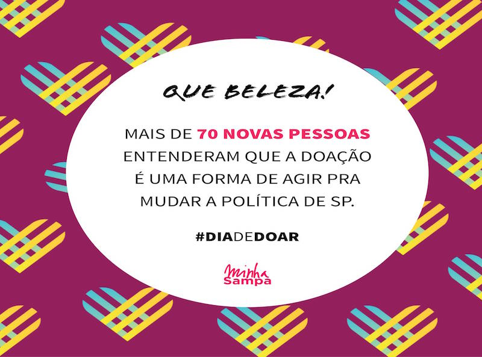

Organização aumenta em 50% sua base de doadores com campanha ligada ao #diadedoar
16 de Fevereiro de 2017 às 07:00
Inspirado na norte-americana #GivingTuesday, o #diadedoar é uma campanha que busca estimular a cultura de doação no Brasil. Muitas organizações aproveitam a iniciativa para criar ações de captação. Uma delas foi a Minha Sampa, que mobiliza pessoas em torno de campanhas públicas de pressão. O objetivo, no entanto, não era conseguir recursos imediatos, e sim doadores que garantissem a sustentabilidade da entidade em longo prazo.
“Trabalhamos com pressão sobre o poder público, de maneira apartidária, e quase nunca conseguimos captar com empresas ou institutos corporativos pela multiplicidade de causas com que atuamos. Nosso objetivo é aumentar o número de pessoas que nos apoiam”, diz a diretora executiva da Minha Sampa, Anna Livia Arida.
A organização decidiu não fazer a ação em 29 de novembro — data em que foi realizado o #diadedoar —, mas durante a semana que a antecedeu. “No dia da campanha, as pessoas recebem muitos pedidos. Seríamos apenas mais um. Usamos a data como um prazo e colocamos uma meta clara: conseguir mais 50 doadores recorrentes para nossa base, que já conta com 100”, ressalta Anna Livia.
A Minha Sampa tem 150 mil nomes no mailing das campanhas que promove, mas, segundo a diretora executiva, muitos só conhecem a plataforma on-line e não fazem ideia de quem está por trás da organização.
“A estratégia foi fazer vídeos com as cinco pessoas que trabalham na instituição, nos quais elas falam sobre seu trabalho, o que mais as marcou na organização e por que era importante o apoio do espectador”, explica Anna Livia.
Os vídeos foram sendo publicados diariamente no Facebook da entidade, nos perfis pessoais dos que trabalham na Minha Sampa e direcionados para os participantes mais ativos das campanhas da organização. “Cada filme publicado, era a oportunidade para iniciar uma nova conversa e engajar potenciais doadores”, afirma a diretora executiva.
O trabalho não se encerrou no dia 29 de novembro. “Nos três dias seguintes, retomamos contato com os que disseram que doariam, mas ainda não haviam contribuído”, lembra Anna Livia.
Além dos 50 doadores recorrentes, a Minha Sampa também teve 20 doações únicas. “Estamos monitorando quem fez essas contribuições para, em algum momento, tentarmos torná-las constantes.”
Primeira campanha
Em junho de 2016, a entidade havia feito a primeira campanha para angariar doadores recorrentes, e conseguiu 100 nomes iniciais para sua base. Anna Livia aponta, entretanto, mudanças significativas entre a primeira e a segunda iniciativa.
“Em junho, nós não tínhamos uma meta. Foi um trabalho mais intenso, fizemos materiais segmentados conforme o perfil do público. Todos os doadores que conseguimos eram de pessoas engajadas em nossas campanhas. No #diadedoar, trabalhamos com uma meta clara e que foi uma importante força mobilizadora para nós. Atingimos não só as pessoas que estão na base das nossas campanhas, mas também, por causa de nossos perfis pessoais, outras que não tinham relação conosco. Ativamos esse nosso círculo pessoal para expandir o alcance, tanto que apenas dez dos cinquenta novos doadores são participantes muito ativos das nossas ações.”
“Trabalhamos com pressão sobre o poder público, de maneira apartidária, e quase nunca conseguimos captar com empresas ou institutos corporativos pela multiplicidade de causas com que atuamos. Nosso objetivo é aumentar o número de pessoas que nos apoiam”, diz a diretora executiva da Minha Sampa, Anna Livia Arida.
A organização decidiu não fazer a ação em 29 de novembro — data em que foi realizado o #diadedoar —, mas durante a semana que a antecedeu. “No dia da campanha, as pessoas recebem muitos pedidos. Seríamos apenas mais um. Usamos a data como um prazo e colocamos uma meta clara: conseguir mais 50 doadores recorrentes para nossa base, que já conta com 100”, ressalta Anna Livia.
A Minha Sampa tem 150 mil nomes no mailing das campanhas que promove, mas, segundo a diretora executiva, muitos só conhecem a plataforma on-line e não fazem ideia de quem está por trás da organização.
“A estratégia foi fazer vídeos com as cinco pessoas que trabalham na instituição, nos quais elas falam sobre seu trabalho, o que mais as marcou na organização e por que era importante o apoio do espectador”, explica Anna Livia.
Os vídeos foram sendo publicados diariamente no Facebook da entidade, nos perfis pessoais dos que trabalham na Minha Sampa e direcionados para os participantes mais ativos das campanhas da organização. “Cada filme publicado, era a oportunidade para iniciar uma nova conversa e engajar potenciais doadores”, afirma a diretora executiva.
O trabalho não se encerrou no dia 29 de novembro. “Nos três dias seguintes, retomamos contato com os que disseram que doariam, mas ainda não haviam contribuído”, lembra Anna Livia.
Além dos 50 doadores recorrentes, a Minha Sampa também teve 20 doações únicas. “Estamos monitorando quem fez essas contribuições para, em algum momento, tentarmos torná-las constantes.”
Primeira campanha
Em junho de 2016, a entidade havia feito a primeira campanha para angariar doadores recorrentes, e conseguiu 100 nomes iniciais para sua base. Anna Livia aponta, entretanto, mudanças significativas entre a primeira e a segunda iniciativa.
“Em junho, nós não tínhamos uma meta. Foi um trabalho mais intenso, fizemos materiais segmentados conforme o perfil do público. Todos os doadores que conseguimos eram de pessoas engajadas em nossas campanhas. No #diadedoar, trabalhamos com uma meta clara e que foi uma importante força mobilizadora para nós. Atingimos não só as pessoas que estão na base das nossas campanhas, mas também, por causa de nossos perfis pessoais, outras que não tinham relação conosco. Ativamos esse nosso círculo pessoal para expandir o alcance, tanto que apenas dez dos cinquenta novos doadores são participantes muito ativos das nossas ações.”
Notícias mais populares
Gestão
Em agosto de 2017, a revista ÉPOCA e o Instituto Doar divulgaram a primeira ediç&...
Contexto e tendências
Criado para tornar mais transparentes as parcerias entre a administração públic...
Profissional captador
A captação de recursos é fundamental para a sustentabilidade de uma organiza&cc...